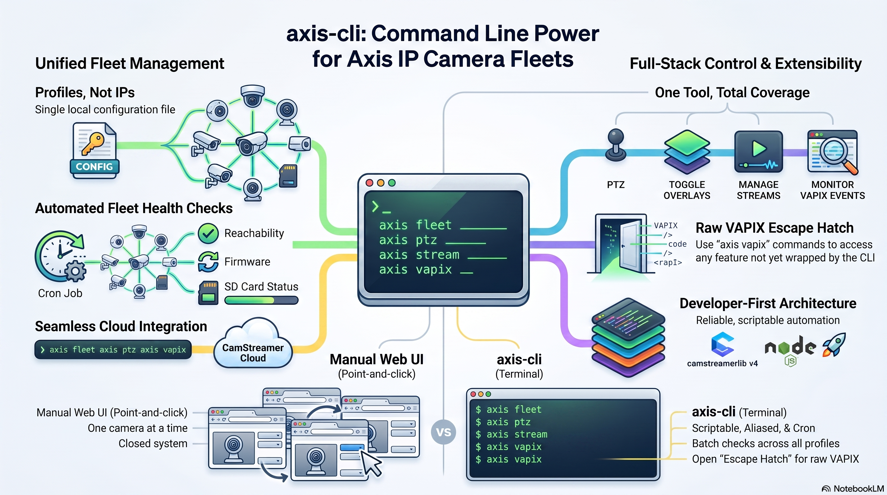

What it does
axis-cli turns Axis camera management into something you can script, alias, and cron. Instead of clicking through camera web UIs or writing one-off VAPIX curl calls, you save each camera once as a named profile and then run terminal commands to check firmware, control PTZ, toggle overlays, manage streams, switch views, and pull live events — across one camera or an entire fleet.

Fleet-wide health check across saved camera profiles, run from a single command.
Why axis-cli
Profiles, not IPs
Save each camera once (~/.axis-cli/config.json, mode 0600) and refer to it by name everywhere after. Verify a profile any time with axis camera test.
One tool, whole stack
VAPIX params, PTZ, ACAP management, CamOverlay, CamStreamer, CamSwitcher, and live VAPIX events — all under a single axis command.
Cloud or local
Works with cameras on the local network or through CamStreamer Cloud (device-connect.net) via DEVICE_ACCESS_TOKEN — same commands either way.
Fleet-aware
axis fleet health probes every saved camera in parallel with a per-request timeout, and exits non-zero if any is unreachable — so it works as a cron monitoring check.
Scriptable output
Add --json to any command for machine-readable output you can pipe into jq. Secrets are never included.
Secrets stay out of history
Omit --pass and you're prompted without echo. Or use AXIS_PASS for CI. Nothing lands in your shell history or ps output.
Errors that tell you what to do
Transport and TLS failures name the cause and the fix, instead of a bare fetch failed.
Escape hatch included
axis vapix get/post covers anything not wrapped by a dedicated command, so you're never blocked waiting on a feature.
Built on real libraries
Uses camstreamerlib v4, commander, and cli-table3 — not a reinvented wheel.
See it in action
How axis-cli automates camera fleets, end to end.
Features
- Network discovery: scan the LAN for Axis cameras, no saved profile needed (
axis discovery,--addto save interactively) - Camera profiles: add, update, test, list, remove (local IP, HTTPS/TLS, or cloud)
- General VAPIX: device info, param get/set, reboot
- PTZ: list presets, go to preset, read position
- ACAP apps: list (all or running), start, stop, restart
- CamOverlay: list services, enable/disable, push text fields
- CamStreamer: list, show, start/stop streams
- CamSwitcher: list, switch view, queue view, clear queue
- Fleet health: parallel probes with timeouts, non-zero exit on failure
- Live events: watch VAPIX events (motion, I/O, ACAP) in real time
- Self-signed certificate support via
--tls-insecure --jsonoutput on every command, for piping intojq- Raw VAPIX escape hatch for anything unwrapped
Usage
1. Find a camera on the network
# Auto-detects your machine's /24, no credentials needed
axis discovery
# Scan, then interactively ask to save each camera found
axis discovery --addReliable even where SSDP/UPnP/mDNS broadcast discovery has been disabled — the default on AXIS OS 11/12.x. Already know the IP? Skip straight to step 2.
2. Save a camera
# Omit --pass and you'll be prompted without echo.
axis camera add q1656 --ip 192.168.1.156 --user root
# HTTPS: port defaults to 443. Most Axis cameras ship a self-signed cert.
axis camera add frontdoor --ip 192.168.1.60 --tls --tls-insecure
# Via CamStreamer Cloud instead of a local IP
axis camera add remote-cam --cloud-url https://xxxx.device-connect.net
axis camera test q1656 # verify reachability + credentials
axis camera list3. Inspect and control it
axis info q1656 # brand, firmware, serial, CamStreamer ACAPs
axis info q1656 --all-acaps # include third-party ACAPs
axis apps list q1656 --running
axis ptz goto q1656 "Home" -c 1
axis overlay text q1656 3 temperature=22.5C humidity=45%
axis stream list q1656
axis switcher switch q1656 MainView
axis events watch q1656 # live events until Ctrl+C4. Monitor the fleet
axis fleet health
axis fleet health --timeout 3000 --concurrency 16
# Exits 1 if any camera is unreachable — usable directly in cron
axis fleet health --json | jq '.[] | select(.reachable == false)'ps to other local users. In order of preference: omit the flag
and let the CLI prompt you, set AXIS_PASS / AXIS_CLOUD_TOKEN for CI, or pass
--pass only as a last resort.
Reliability
Fixes verified against a live AXIS Q1656 on firmware 12.10.73.
| Area | What changed |
|---|---|
| Parameter reads | camstreamerlib returns parameter keys with the leading root. stripped, so brand, product, firmware, serial and IP silently read as empty. Lookups are now prefix-normalised. |
| TLS | --tls now defaults the port to 443 instead of leaving it at 80. --tls-insecure accepts the self-signed certificate most Axis cameras ship with. |
| ACAP listings | Only CamStreamer-family apps carried an appId, so third-party ACAPs were hidden from axis info. Use --all-acaps for the full inventory; counts are labelled explicitly. |
| Error handling | Every command routes through one error path — clean messages, no stack traces, correct exit codes. Transport, TLS and schema failures explain the cause and the fix. |
| Input validation | Non-numeric ports, channels and service IDs are rejected up front rather than stored as null. |
| Fleet checks | Cameras are probed in parallel with a per-request timeout, so one dead camera no longer stalls the whole report. |
| Discoverability | Mistyped commands get a "did you mean" suggestion plus usage. axis ptz list works as an alias for presets. |
Install
Requires Node 18 or newer. Two routes — pick the one that suits you.
Double-click installer
Download axis-cli-v1.3.0-installer.zip from the
latest release, unzip it, then:
- macOS — run
install.command. Unsigned, so the first time right-click → Open rather than double-clicking. - Windows — run
install.bat. If you hitEPERM, right-click → Run as administrator.
Both scripts check Node, install dependencies, build, install axis globally, and
verify it — then print your next commands.
From source
git clone https://github.com/kotyzap/axis-cli.git
cd axis-cli
npm ci
npm run build
npm install -g .
axis --versionnpm install -g ., not npm link.
npm link only symlinks back to the project folder, so axis breaks if that
folder moves, is deleted, or sits on an external drive that isn't mounted.
npm install -g . copies the built files into Node's global folder — self-contained and
unaffected by reboots. To run without installing at all, use
node dist/index.js <command> from the project directory.
axis reports "permission denied": the compiled entry point lost its
executable bit — tsc doesn't set one. Run npm run build again (the
postbuild step fixes the mode), or set it directly with
chmod +x dist/index.js.
Source and tagged releases are on GitHub — see the releases page for downloadable builds, or the changelog for what changed in 1.3.0.
Resources
- axis-cli 101 tutorial Install, add your first camera, first commands
- Unified Control overview (PDF) One-page summary of the tool
- Unified Control deck (PPTX) Slide version for presenting
- Fleet tracker template (XLSX) Track cameras, firmware, and health checks
- Automation sample (SH) Cron-ready fleet check and overlay updater
- Source on GitHub Full source, issues, and releases
- Command reference Every command and flag, documented